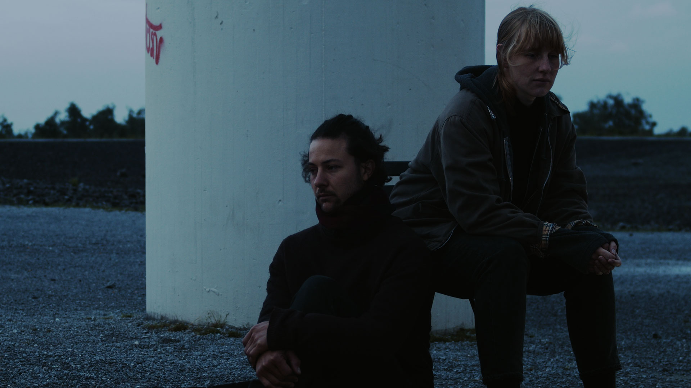
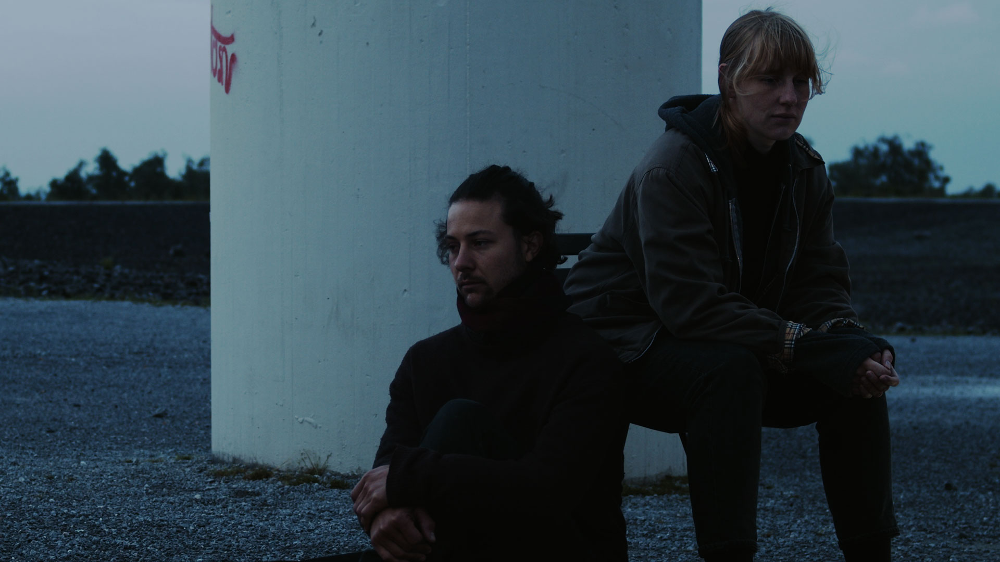

Views at Galerie d'art Louise-et-Reuben-Cohen, Moncton
 

Video still frames
Aubes , 2021
Video multicanal
36:00 min.
Audio stéréo
En processus
Camera: Kathrin Grzeschniok
Featuring: Henrik Beeke, Leonie Böhmer, Katharina Geling, Danijel Brekalo, Fabio Gorchs, Kathrin Grzeschniok, Ama Gyaako Kagya Agyemang, Lorenza Elisabeth Kaib, Aljoscha Lahner, Camilla Mücksch, Scherin Rajakunaran, Hannah Stratmann, Philipp Daniel Unger, Anna Wehling
Special thanks: Ralf D’Atri, Alisha Raissa Danscher, Jan Ehlen, Einar Fehrholz, Vittoria Lenz, Vanessa Nica Mueller, Thomas Szabo, Makroscope Mülheim